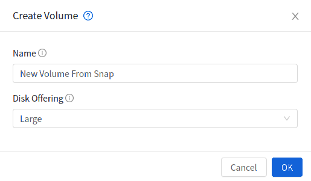
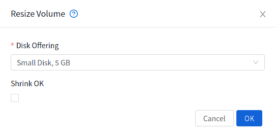
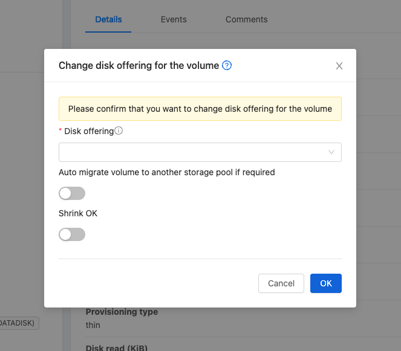
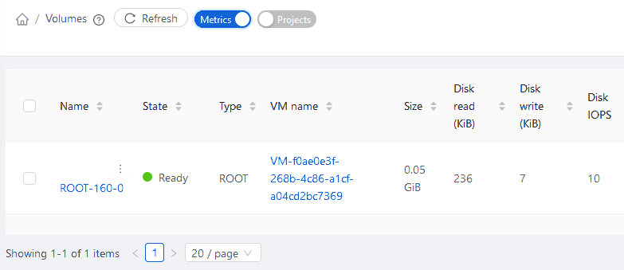

Volume Management#
Creating a New Volume#
You can add more data disk volumes to a Guest Instance at any time, up to the limits of your storage capacity. When you create a new volume, it is stored as an entity in the database, but the actual storage resources are not allocated on the physical storage device until you attach the volume.
When creating a new volume from an existing ROOT Volume Snapshot, it is required to explicitly define a Disk offering (UI will offer only Disk offerings whose disk size is equal or bigger than the size of the Snapshot).

When creating a new volume from an existing DATA Volume Snapshot, the disk offering associated with the Snapshots (inherited from the original volume) is assigned to the new volume.
To Create a New Volume#
Log in to the UI as a User or admin.
In the left navigation bar, click Storage.
In Select View, choose Volumes.
To create a new volume, click Add Volume, provide the following details, and click OK.
Name. Give the volume a unique name so you can find it later.
Availability Zone. Where do you want the storage to reside? This should be close to the Instance that will use the volume.
Disk Offering. Choose the characteristics of the storage.
The new volume appears in the list of volumes with the state “Allocated.” The volume data is stored in the database, but the volume is not yet ready for use
To start using the volume, continue to Attaching a Volume
Uploading an Existing Volume to an Instance#
Existing data can be made accessible to an Instance. This is called uploading a volume to the Instance. For example, this is useful to upload data from a local file system and attach it to an Instance.
The upload is performed using HTTP. The uploaded volume is placed in the zone’s secondary storage
You cannot upload a volume if the preconfigured volume limit has already been reached.
To upload a volume:
(Optional) Create an MD5 hash (checksum) of the disk image file that you are going to upload. After uploading the data disk, CloudStack will use this value to verify that no data corruption has occurred.
Log in to the UI as an administrator or User
In the left navigation bar, click Storage.
Click Upload Volume.
Provide the following:
Name and Description. Any desired name and a brief description that can be shown in the UI.
Availability Zone. Choose the zone where you want to store the volume. Instances running on hosts in this zone can attach the volume.
Format. Choose one of the following to indicate the disk image format of the volume.
Hypervisor
Disk Image Format
XenServer
VHD
VMware
OVA
KVM
QCOW2
URL. The secure HTTP or HTTPS URL that can be used to access your disk. The type of file at the URL must match the value chosen in Format. For example, if Format is VHD, the URL might look like the following:
http://yourFileServerIP/userdata/myDataDisk.vhdMD5 checksum. (Optional) Use the hash that you created in step 1.
Wait until the status of the volume shows that the upload is complete. Click Instances - Volumes, find the name you specified in step 5, and make sure the status is Uploaded.
Attaching a Volume#
You can attach a volume to a Guest Instance to provide extra disk storage. Attach a volume when you first create a new volume, when you are moving an existing volume from one Instance to another, or after you have migrated a volume from one storage pool to another.
Log in to the UI as a user or admin.
In the left navigation, click Storage.
In Select View, choose Volumes.
Click the volume name in the Volumes list, then click the Attach Disk button
In the Instance popup, choose the Instance to which you want to attach the volume. You will only see Instances to which you are allowed to attach volumes; for example, a user will see only Instances created by that user, but the administrator will have more choices.
When the volume has been attached, you should be able to see it by clicking Instances, the Instance name, and View Volumes.
Detaching and Moving Volumes#
A volume can be detached from a Guest Instance and attached to another guest. Both administrators and users can detach volumes from Instances and move them to other Instances.
If the two Instances are in different clusters, and the volume is large, it may take several minutes for the volume to be moved to the new Instance.
Log in to the UI as a user or admin.
In the left navigation bar, click Storage, and choose Volumes in Select View. Alternatively, if you know which Instance the volume is attached to, you can click Instances, click the Instance name, and click View Volumes.
Click the name of the volume you want to detach, then click the Detach Disk button.
To move the volume to another Instance, follow the steps in “Attaching a Volume”.
Resizing Volumes#
Zergaw CloudStack provides the ability to resize data disks; Volume sizing is controlled by using disk offerings. Additionally, using the resizeVolume API, a data volume can be moved from a static disk offering to a custom disk offering with the size specified.
Before you try to resize a volume, consider the following:
The Instances associated with the volume are stopped.
The data disks associated with the volume are removed.
To resize a volume:
Log in to the UI as a user or admin.
In the left navigation bar, click Storage.
In Select View, choose Volumes.
Select the volume name in the Volumes list, then click the Resize Volume button
In the Resize Volume pop-up, choose desired characteristics for the storage.

If you select Custom Disk, specify a custom size.
Click Shrink OK to confirm that you are reducing the size of a volume.
This parameter protects against inadvertent shrinking of a disk, which might lead to the risk of data loss. You must sign off that you know what you are doing.
Click OK.
Root Volume size defined via Service Offering#
If a Service Offering is created with a root disk size, then resizing the Root volume is possible only by resizing the Instances service offering.
Service offering Root resizing constrains:
Users cannot deploy Instances with custom root disk size when using such offerings
Users cannot resize the Instance root disk size when using such offerings
The Root Volume of such Instances can only be resized when changing to another Service Offering with a Root disk size equals or larger than the current one.
Users can change the Instance offering to a service offering with a Root size of 0GB (default) and then customize the volume size.
Change disk offering for volume#
There are volume operations like migrate volume and resize volume and both accepts new disk offering to replace the existing disk offering of volume. Instead of using these APIs directly, the operation can be performed in the UI using change offering in the details view for the volume. Upon changing the disk offering the volume will be resized and/or migrated to the suitable storage pool if required according to the new disk offering.
To change the disk offering of a volume:
Log in to the UI as a user or admin.
In the left navigation bar, click Storage.
In Select View, choose Volumes.
Select the volume name in the Volumes list, then click the Change Offering for Volume button
In the Change Offering For Volume pop-up, choose desired disk offering for the volume.

If you select Custom Disk, specify a custom size.
Enable or Disable “Auto migrate to another storage pool if required” as needed
Click OK.
Reset Instance to New Root Disk on Reboot#
You can specify that you want to discard the root disk and create a new one whenever a given Instance is rebooted. This is useful for secure environments that need a fresh start on every boot and for desktops that should not retain state. The IP address of the Instance will not change due to this operation.
To enable root disk reset on Instance reboot:
When creating a new service offering, set the parameter isVolatile to True. Instances created from this service offering will have their disks reset upon reboot. See “Creating a New Compute Offering”.
Volume delete protection#
Zergaw CloudStack protects volumes from accidental deletion using a delete protection flag, which is false by default. When delete protection is enabled for a volume, it cannot be deleted through the UI or API. It can only be deleted after removing delete protection from the volume.
Delete protection can be enabled for a volume via updateVirtualMachine API.
cmk update volume id=<volume id> deleteprotection=true
To remove delete protection, use the following command:
cmk update volume id=<volume id> deleteprotection=false
To enable/disable delete protection for a volume using the UI, follow these steps:
Log in to the UI as a User or admin.
In the navigation menu on the left, click Volumes under Storage.
Choose the volume for which you want to enable/disable delete protection.
Click on the Edit button

Toggle the Delete Protection switch to enable or disable delete protection.
Click Ok button to save the changes.
Note
The volume delete protection is only considered when the volume is being deleted through the UI or via deleteVolume or destroyVolume API. If the domain/project is deleted, the volumes under the domain/project will be deleted irrespective of the delete protection status.
Volume Deletion and Garbage Collection#
The deletion of a volume does not delete the Snapshots that have been created from the volume.
When an Instance is destroyed, data disk volumes that are attached to the Instance are not deleted unless specified.
Volume Metrics#
Volume statistics are collected on a regular interval (600 seconds). This feature is currently only available for VMware and KVM. Volume stats include include bytes/s and IO/s statistics as shown in the API output below.
[root@mgmt]# cmk list volumesmetrics id=272c3d8b-ef2c-499e-abfb-736b54d3d6b1
{
"count": 1,
"volume": [
{
...
"diskiopstotal": 30245,
"diskioread": 22443,
"diskiowrite": 7802,
"diskkbsread": 343124,
"diskkbswrite": 217619,
...
Bytes read/write, as well as the total IO/s, are exposed via UI, as shown in the image below.

These statistics are obtained from the hypervisor directly and they represent “current” bytes/s and IO/s values at the time of collection.